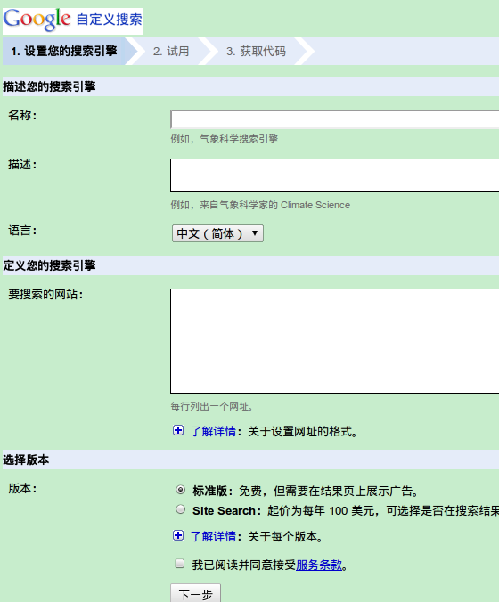

虽然我的blog点击人数可能还是个位数的, 我还是每天都想折腾一下它...
bootstrap2模板里提供了很丰富的内容(可以看farseerfc学长的页面), 其中的google站内搜索我觉得很有用, 于是也自己去弄了一下...
使用google自定义搜索
要登录google自定义搜索, 的页面, 用google帐号登录, 然后选择新建一个自定义搜索引擎, 会看到这样的界面:

第一项的名称和描述啥的随便填就行, 关键是第二项"要搜索的网站", 可以点击"了解详情"看一下应该怎么写. 比如我的网站是x-wei.github.com, 而且我想是在这个网站的所有子页面中搜索, 于是这里就填写: x-wei.github.com/*即可~ 第三项当然是免费版, 然后下一步.
下一步是一个测试, 可以在搜索框里尝试一下能不能得到想要的结果(我就是这里有问题的, 待会说). 如果没问题, 点击下一步, 下一步是给出了一段html代码, 把这些代码加入网页就可以添加google自定义搜索栏了(不过使用pelican写博客的话就不用这样了, 见后文).
嗯, 这个过程还是非常简单的吧!~
如何把自定义搜索栏加入pelican生成的页面
首先, 可能只能使用bootstrap2这个主题... 然后, 在settings.py ...